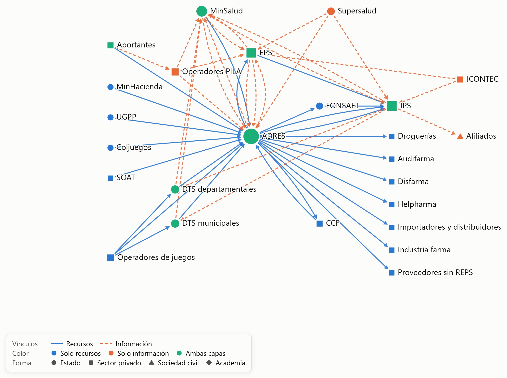
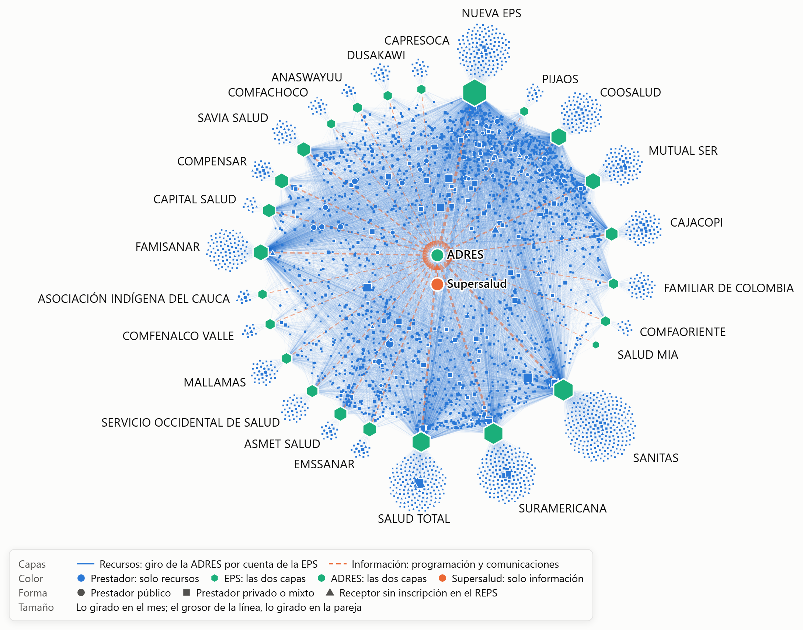

Red normada
Los flujos de dinero y de información que establecen las normas: 25 actores y 49 vínculos, cada uno con su norma y artículo.
Abrir el visorVisores interactivos del proyecto de grado de Juanita Bejarano y Federico Niño (Ingeniería Industrial, Universidad de los Andes). El proyecto estudia la red de flujos de recursos e información entre la ADRES, las EPS y los prestadores de salud bajo el giro directo en Colombia. Los visores se abren en el navegador y no necesitan instalar nada.

Los flujos de dinero y de información que establecen las normas: 25 actores y 49 vínculos, cada uno con su norma y artículo.
Abrir el visor
El giro directo tal como ocurrió, con los anexos mensuales que publica la ADRES. En septiembre de 2026: 25 EPS, 3.810 prestadores y $7,58 billones.
Abrir el visor